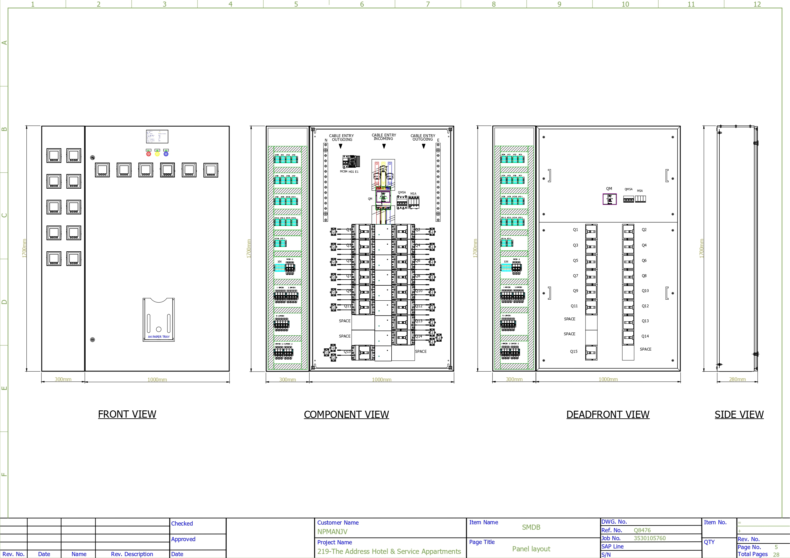

Enc. PowerLine PLUS M
This project involved designing of a 400/230 V, 3-phase, 4-wire + earth, 60 Hz electrical distribution system with a 36 kA short-circuit level and TN-S earthing system. The design focused on providing reliable downstream power distribution while incorporating protection, metering, environmental control, and BMS monitoring within a compact LV switchboard.
The SMDB was built around the Schneider Electric PowerLine PLUS M enclosure system, an indoor LV distribution enclosure designed for modular assembly and practical installation. The enclosure incorporates Form 2B / Type 2 internal separation, IP54 protection, and IK08 mechanical impact protection. The design features a robust 1.5 mm steel enclosure, RAL 9002 finish, plain front door with a keyed rotary handle, natural ventilation, and provisions for top and bottom cable entry. These features provide suitable mechanical protection and accessibility for an indoor commercial installation while maintaining separation between the functional sections of the board.
The panel also integrates electrical metering and monitoring rather than functioning solely as a power distribution board. Current transformers are provided for feeder current measurement, while Schneider Electric EasyLogic PM2130 power and energy meters are used for monitoring electrical parameters and energy consumption. The metering system supports RS-485 communication, allowing the measured data to be integrated into the building monitoring system. In addition, the panel incorporates BMS interface signals for communication with the building management system.
The design documentation specifies compliance with IEC 61439-1 & IEC 61439-2 and incorporates defined enclosure, protection, labeling, and wiring requirements.
